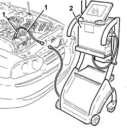
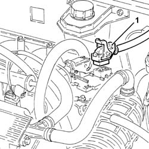
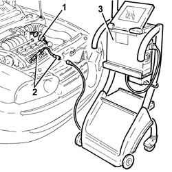

0520G15 compression test with sdc with spark plugs or injectors removed
- Path
- Procedures > 05 DIAGNOSTICS > 0520 CONTROLS WITH S.D.C. > 0520G instruments > 0520G15 compression test with sdc with spark plugs or injectors removed
- Kind
- repair procedure (removal / refitting; the operation number is the code)
- Applies to
- engines: 1.6 TS , 1.8 TS, 2.5 V6; all production periods
- Interactive page
- https://sloeber94.github.io/elrnDB-a156/en/#/3237433
Applies to: engines: 1.6 TS ; all production periods
Disconnect wiring from the engine control unit (make reference to OP). 1056B82 injection/ignition system e.c.u. (one) - r + r
 | Name | Connector |
|---|---|---|
- | Engine management ECU |
1. Assembly in the seat of one "central" spark plug "Probe EXAMINER 50 bar" and "Adapter EX8" tools.
2. Connect diagnosis station.
By means of starter make the engine carry out some rev by pressing accelerator and clutch pedals.
Repeat the test on the remaining cylinders.
Check pressure values in cylinders are too different.

Applies to: engines: 1.6 TS ; all production periods
Connect wiring to the engine control unit (make reference to OP). 1056B82 injection/ignition system e.c.u. (one) - r + r
| Name | Connector |
|---|---|---|
- | Engine management ECU |
Applies to: engines: 1.8 TS; all production periods
1. Disconnect wiring from the engine control unit.
| Name | Connector |
|---|---|---|
1 | Engine management ECU |

Applies to: engines: 1.8 TS; all production periods
1. Assembly in the seat of one "central" spark plug "Probe EXAMINER 50 bar" and "Adapter EX8" tools.
2. Connect diagnosis station.
By means of starter, make the engine carry out some rev by pressing accelerator and clutch pedals.
Repeat the test on the remaining cylinders.
Check pressure values in cylinders are not too different.
Applies to: engines: 1.8 TS; all production periods
Connect wiring to the engine control unit.
| Name | Connector |
|---|---|---|
- | Engine management ECU |
Applies to: engines: 2.5 V6; all production periods
1. Disconnect engine main wiring.
2. Assembly in the seat of one spark plug "Probe EXAMINER 50 bar" and "Adapter EX8" tools.
3. Connect diagnosis station.
By means of starter, make the engine carry out some rev by pressing accelerator and clutch pedals.
Repeat the test on the remaining cylinders.
Check pressure values in cylinders are not too different.

Applies to: engines: 2.5 V6; all production periods
Connect engine main wiring.